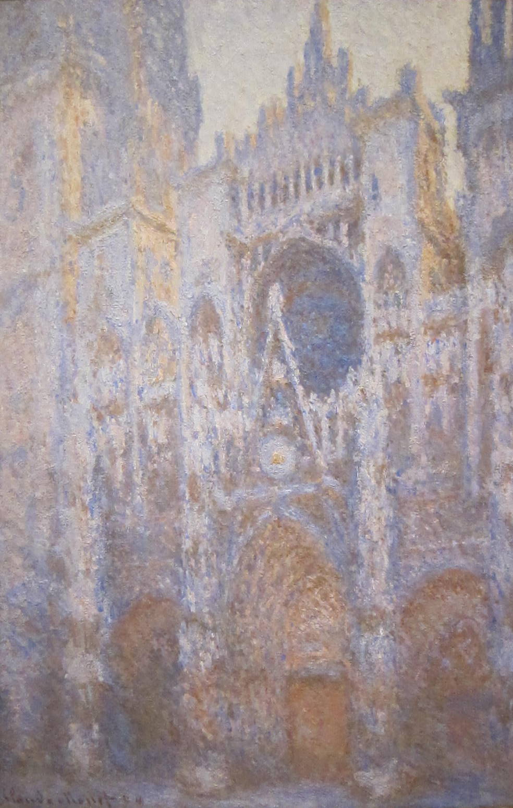
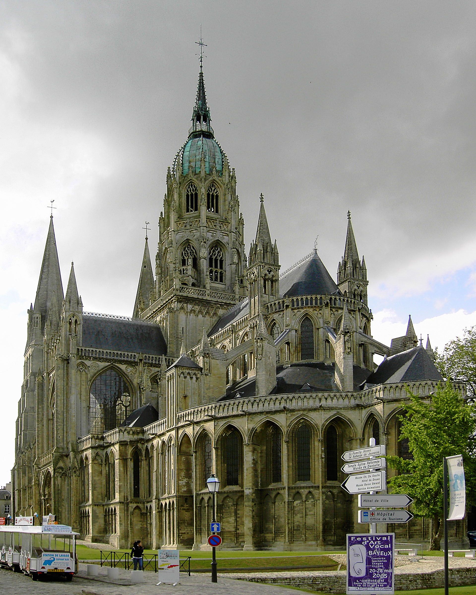

A two-day educational journey exploring three of Normandy's most powerful legacies: the Middle Ages, the Second World War and Impressionism.
Through historical sites, landscapes, museums and participatory activities, students discover how these three major periods shaped Normandy and continue to influence its identity today.
A lively introduction to the weekend, its itinerary and its three main themes.
This onboard format prepares students for the journey ahead and provides the essential context needed to connect the different places and historical periods explored during the programme.
An unexpected exploration of the French motorway service area as a place of travel, consumption and everyday culture.
Students examine what this familiar environment reveals about French lifestyles, regional identity and the country's relationship with mobility.

PulseStop 1 · Day 1
The Middle-Ages Journey
Rouen provides an exceptional setting for understanding medieval Normandy.
Its cathedral, historic streets and association with Joan of Arc allow students to explore the political, religious and everyday realities of the Middle Ages directly in the places where history unfolded.
An engaging walking exploration of Rouen designed to challenge common misconceptions about medieval life.
Through observation, discussion and storytelling, students investigate how people lived, believed, worked and understood the world around them.
Rather than presenting the Middle Ages as a distant or purely dark period, the activity encourages participants to compare medieval society with their own lives and question common assumptions about the period.
Lunch and Free Time in Rouen
An exploration of letters and personal correspondence written by people directly affected by the war, including soldiers, relatives and civilians.
Their words provide an intimate and immediate perspective on the conflict, helping students understand not only what happened, but also how individuals experienced uncertainty, separation, fear and hope.
Stop 2 · Day 1
Landscapes of War
Students explore the landscapes of the Normandy landings and discover how beaches, villages, memorials and cemeteries have become places where military history, personal memories and present-day life coexist.
The experience examines how local communities rebuilt their lives while preserving the physical traces, personal stories and collective memories of the conflict.
A guided exploration of the Omaha Beach area by coach, combining historical interpretation, landscape observation and visits to major remembrance sites.
Students discover where some of the most significant events of D-Day took place and examine how geography, military planning and individual experiences shaped the events of 6 June 1944.
The activity also encourages students to consider how history is remembered, transmitted and interpreted by different generations.

Stop 3 · Day 1 (overnight)
Quaint and Timeless
After a day devoted to major historical events, Bayeux offers a quieter and more intimate experience of Normandy.
Its preserved historic centre, traditional architecture and relaxed atmosphere provide the ideal setting for an overnight stay.
A concise and engaging introduction to Impressionism, its main innovations and Normandy's central role in its development.
During the journey, students receive the essential historical and artistic context needed to recognise the movement's ideas, techniques and subjects when they arrive in Honfleur.
 Pulse
Pulse
Stop 4 · Day 2
The Arts and Delights Journey
With its historic harbour, changing light and long association with artists, Honfleur provides an ideal environment for understanding Normandy's artistic heritage.
Students explore how painters, musicians and cultural institutions have interpreted the town and transformed everyday places into sources of artistic inspiration.
An innovative and participatory approach to museums and cultural resources, designed to make museum visits engaging, accessible and memorable.
The activity is particularly suitable for students who are unfamiliar with museums, reluctant to visit them or interested in discovering new ways of observing and interpreting artworks.
Through challenges, discussions, visual observation and personal responses, participants become active visitors rather than passive spectators.
Lunch and Free Time in Honfleur